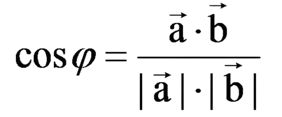
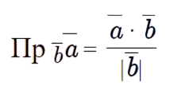

Углом между двумя векторами, отложенными от одной точки, называется кратчайший угол, на который нужно повернуть один из векторов вокруг своего начала до положения сонаправленности с другим вектором.Угол между двумя векторами a и b можно найти использовав следующую формулу:
Для вычисления проекции вектора a на направление вектора b из определения скалярного произведения получена формула:
